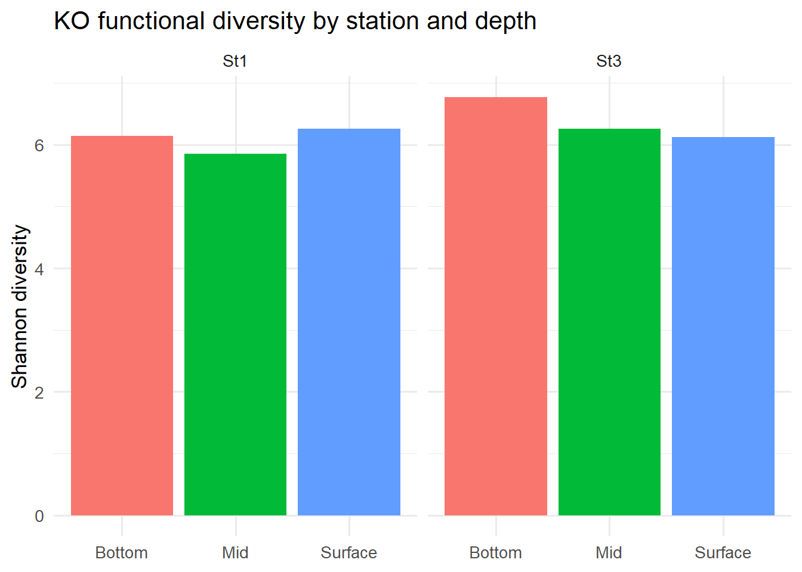
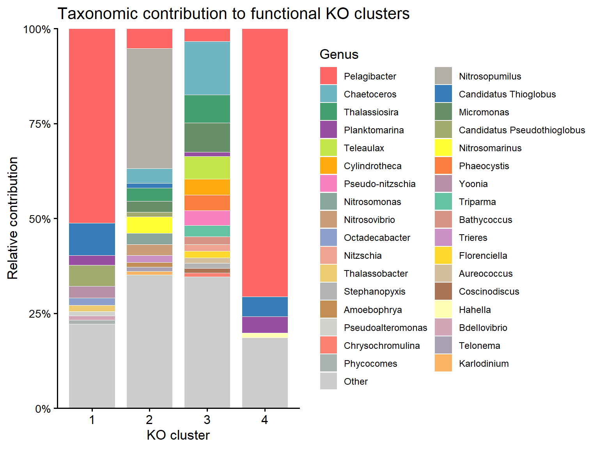

This report summarises the bioinformatics workflow applied to the Chukchi Sea eRNA samples to explore the metabolic pathways active and highly expressed, invovled in biogeochemical cycles.
Context
Samples were collected aboard the R/V Sikuliaq during the 2023 DBO/ECO-Foci cruise (SKQ23-12S) in the northern Bering and Chukchi Seas between 10 September and 1 October 2023. Sampling targeted repeat stations from the long-term DBO/ECO-Foci programmes across the northern Bering and Chukchi Shelf regions. The cruise took place during autumn, close to the annual sea-ice minimum, when surface nutrient depletion may begin to relax through wind-driven mixing and episodic resuspension. Hydrographic conditions were characterised using CTD profiles, while dissolved inorganic nutrients, including nitrate, nitrite, ammonium, phosphate and silicate, were measured from Niskin bottle samples collected at each station.
Figure 1. Map of the Bering and Chukchi Sea region showing the positions of sampled stations in the North Bering Sea (NB), Southern Chukchi Sea (SC) and Northern Chukchi Sea (NC).
🧪 Sample Processing, Sequencing & Data Availability
The Centre for Genomic Research (CGR) processed 9 marine eRNA samples (+ 1 negative control) for metatranscriptomic sequencing as part of project SSP203072. The workflow included:
DNase treatment of all extracted RNA samples.
rRNA depletion using the Seawater riboPOOL kit.
Construction of Illumina RNA-seq libraries from the rRNA-depleted material.
Multiplexing of all libraries and sequencing on one lane of an Illumina NovaSeq X Plus (NovaSeq X+) 25B flow cell.
This setup is expected to produce approximately ~325 million read pairs per sample, providing deep metatranscriptomic coverage suitable for resolving nitrogen-cycling pathways, including denitrification and anammox.
Funding & administrative details:
SSP ID: SSP203072
Platform: Illumina NovaSeq X+
Funding: NEOF1819 — Purchase Order P11212-200
All files—including raw data, processing details, and download instructions—are available via:
Description of Methods The raw FASTQ files are trimmed for the presence of Illumina adapter sequences using Cutadapt version 4.5 . The option -O 3 was used, meaning that trimming occurred in reads where at least 3bp of adapter sequence was observed at the 3’ end of the read. The reads were further trimmed to remove low quality bases with a minimum window quality score of 20. After trimming, reads shorter than 15 bp were removed. Only read pairs are retained, therefore if a read of a pair is trimmed away then the other read in the pair is also discarded.
Note📝 Notes on Low-Yield Samples
4-S13S returned an exceptionally low number of reads because very little RNA was recovered from the corresponding Sterivex filters. This limited input material resulted in poor library complexity and low overall sequencing yield.
10-negative_control is a processing negative control sample and therefore contains no biological RNA. The very low read count is expected and confirms that minimal contamination occurred during library preparation.
🧪 Bioinformatics Workflow
rRNA Removal – SortMeRNA
To enrich for mRNA and other non-rRNA transcripts, we removed ribosomal RNA using SortMeRNA.
The command below shows the SortMeRNA run that was used for each sample. We used the CGR-trimmed paired-end reads as input and the smr_v4.3_sensitive_db_rfam_seeds database for rRNA identification.
RNA_clean files containing the rRNA-depleted read pairs, which are carried forward to assembly.
De Novo Assembly – MEGAHIT
We performed a co-assembly of selected rRNA-depleted samples using MEGAHIT, optimised for complex metatranscriptomic data with the meta-sensitive preset. For illustration, the command below shows the co-assembly of samples:
Assembly statistics for an example MEGAHIT run (St1) were obtained using seqkit:
seqkit stats final.contigs.fa
For example (St1 assembly):
Assembly
# Contigs
Total Length (bp)
Min Length (bp)
Mean Length (bp)
Max Length (bp)
final.contigs.fa
1,432,902
1,457,453,119
500
1,017.1
106,426
These statistics indicate a highly fragmented but deep assembly, typical of complex marine microbial metatranscriptomes, with contigs ≥500 bp retained for downstream analyses.
Read Mapping – Bowtie2 and Samtools
To quantify transcript coverage across assembled contigs, we mapped the rRNA-depleted reads back to the MEGAHIT assembly using Bowtie2, followed by BAM processing with Samtools.
First, we built a Bowtie2 index from the fixed assembly:
Then, for each sample, paired-end reads were aligned and processed as follows:
IDX="St1_assembly-fixed"R1="SAMPLE_RNA_clean_fwd.fq.gz"R2="SAMPLE_RNA_clean_rev.fq.gz"THREADS=16OUT="St1_SAMPLE"Map paired-end readsbowtie2-x"${IDX}"-1"${R1}"-2"${R2}"-p"${THREADS}"-S"${OUT}.sam"Convert to BAM, keep mapped reads only (-F 4), sort and indexsamtools view -F 4 -bS"${OUT}.sam"-o"${OUT}-RAW.bam"samtools sort -@"${THREADS}""${OUT}-RAW.bam"-o"${OUT}.bam"samtools index "${OUT}.bam"
The resulting sorted and indexed BAM files (.bam, .bam.bai) are used as input for downstream coverage estimation and gene- or contig-level quantification in anvi’o.
Creating anvi’o Databases
Subsequent steps involved importing the assemblies and mapped reads into anvi’o to facilitate contig profiling, annotation, and interactive exploration of nitrogen-cycle genes (e.g. denitrification and anammox pathways).
In brief, the workflow included:
Creating a contigs database from the MEGAHIT assembly
Running HMMs and functional annotation (e.g. PFAM, TIGRFAMs, KOfam)
Profiling BAM files for each sample to obtain coverage and detection statistics
Merging profiles across samples for joint inspection and downstream analyses
Example (commands will vary slightly depending on environment and anvio version):
These anvi’o databases form the basis for functional annotation and visualisation of key nitrogen-cycle pathways in the Chukchi Sea metatranscriptomes.
🔍 Functional Annotation of genes
To characterise the metabolic potential represented in the metatranscriptomic assembly, we performed extensive functional annotation of the anvi’o contigs database. This step links assembled sequences to known protein families, orthologous groups, and taxonomic markers, enabling downstream interpretation of nitrogen-cycle genes (e.g., denitrification, anammox).
We used the following anvi’o annotation programs:
anvi-run-hmms
Identifies single-copy core genes (SCGs) and key conserved protein families using anvi’o’s curated HMM collections. This provides quality metrics for assemblies and forms the basis for taxonomic inference.
anvi-run-ncbi-cogs
Assigns Clusters of Orthologous Groups (COGs) from NCBI to contigs based on predicted open reading frames. COG categories help identify broad functional roles such as energy production, amino acid metabolism, stress response, etc.
anvi-run-kegg-kofams
Annotates genes using KEGG Orthologs (KOfam HMMs), providing pathway-level information including nitrogen cycling modules (e.g., nitrate reduction, nitrification, denitrification, anammox).
anvi-run-scg-taxonomy
Uses single-copy core gene content to infer taxonomic origin of contigs, giving insight into which microbial groups are contributing to specific nitrogen-cycling pathways.
🔬 Metabolic Reconstruction and Pathway Visualisation
Following functional annotation, we performed metabolic inference and pathway-level analysis using anvi’o’s metabolism suite. These tools integrate KEGG Ortholog (KOfam) annotations with curated pathway models to identify which biochemical pathways are represented in the dataset and to visualise how transcripts map onto specific metabolic processes—particularly those involved in nitrogen cycling.
We used the following anvi’o programs:
anvi-estimate-metabolism
Identifies complete and partial KEGG modules across all annotated contigs, providing an overview of metabolic potential (e.g., denitrification, dissimilatory nitrate reduction, anammox).
anvi-reaction-network
Generates reaction-centric metabolic networks based on KEGG reactions detected in the assembly. This allows exploration of how individual reactions connect into broader nitrogen pathways.
anvi-draw-kegg
Renders KEGG metabolic pathway diagrams annotated with detected genes, enabling visual inspection of pathway completeness and highlighting which steps are supported by metatranscriptomic evidence.
These tools collectively provide a pathway-level view of nitrogen cycling activity in the Chukchi Sea microbial community, enabling detailed interpretation of expression patterns associated with denitrification, nitrification, and anammox processes.
We can see that there are some KOs with extremely low coverage (<0.1). It’s probably good to filter them out…
Normalising gene coverages
Gene coverages were normalised using the housekeeping genes rpoB and gyrB, which encode the β subunit of RNA polymerase and DNA gyrase B, respectively. These conserved core genes were used as reference markers to provide a measure of background cellular transcriptional activity within each sample. For each sample, the geometric mean of rpoB and gyrB coverage was used as the normalisation factor, reducing dependence on the expression of a single reference gene. Target-gene coverage was divided by this reference value, facilitating comparison of relative gene expression across samples and water-column depths while accounting for differences in overall transcript recovery and sequencing effort. As housekeeping-gene expression may vary with community composition and physiological state, the resulting values should be interpreted as relative expression normalised to community-level housekeeping transcription, rather than absolute expression per cell.
Whole-community transcriptional functional profiles showed clear structuring across the sampled stations and depths. Mid-depth samples from all three stations clustered relatively closely in ordination space, indicating broadly similar KO expression profiles despite their different geographic locations. Interestingly, the surface sample from St3 (St3_S14S) grouped with the mid-depth samples rather than with the other surface sample, suggesting that its transcriptional profile more closely resembled that of the mid-water communities. In contrast, the remaining surface and bottom samples were more dispersed, with St1 in particular showing distinct functional profiles relative to St2 and St3.
Let’s look at which KOs are driving these separations:
These top KOs show the functions most strongly associated with the NMDS structure.
Note: because I used permutations = 0, these are not significance-tested. They are simply the KOs whose abundance patterns best match the NMDS geometry.
Now, let’s look at which functions are associated with these KOs.
The KOs most strongly associated with the ordination included a mixture of core metabolic functions, bacterial transport/envelope functions, and several eukaryotic cellular processes (e.g. translation, cytoskeletal regulation and RNA processing). The heatmap of the top 20 NMDS-associated KOs showed coordinated differences across samples rather than dominance by a single function, with particularly distinct profiles in some bottom and surface samples. These results suggest that the ordination reflects broad shifts in community functional transcriptional composition, potentially influenced by changes in the relative contribution of different taxonomic groups, rather than variation in a single metabolic pathway.
Code
## ------------------------------------------------------------## 4. Functional richness and diversity per sample#### Richness = number of detected KOs## Shannon diversity = diversity of relative KO abundances## ------------------------------------------------------------diversity_df <-tibble(sample =rownames(mat_rel),richness =rowSums(mat_rel >0),shannon =diversity(mat_rel, index ="shannon")) %>%left_join(sample_meta, by ="sample")## KO Shannon diversityggplot(diversity_df, aes(depth, shannon, fill = depth)) +geom_col() +facet_wrap(~station) +theme_minimal(base_size =13) +labs(title ="KO functional diversity by station and depth",y ="Shannon diversity",x =NULL ) +theme(legend.position ="none")

KO functional diversity was broadly comparable among stations and depths
The strong expression of amoABC, together with high nirK and very low hao, is consistent with nitrification being dominated by ammonia-oxidising archaea, in agreement with previous observations. In contrast, genes associated with other nitrogen-cycle pathways were generally expressed at much lower levels across the samples.
Carbon-cycle transcription was strongly dominated by Calvin-cycle markers, particularly rbcL and rbcS, indicating that Calvin-cycle carbon fixation was the most prominent autotrophic carbon-assimilation pathway across the samples.
BUT rbcL and rbcS have super high values so let’s remove them as it could be masking some patterns!
The main pattern is that the apparent methane oxidation signal (pmoA/B/C) is relatively strong across many samples… However, these KOs overlap with amoABC and reflect the archaeal nitrification signal we already identified.
Expression of xoxF suggests active methylotrophy in the water column, potentially reflecting bacterial utilisation of methanol and other C1 compounds released during phytoplankton production and organic-matter degradation.
Clustering of the 50 most variable KOs revealed distinct functional signatures across samples. One cluster was dominated by nutrient-transport and substrate-acquisition genes, suggesting variation in heterotrophic resource utilisation. A small but highly coherent cluster comprising amoC and nirK reflected the previously identified nitrification signal. A larger cluster containing rbcL, rbcS and energy-metabolism genes was consistent with autotrophic and photosynthetic activity, while a fourth cluster contained genes associated with motility, protein-folding stress responses and cytoskeletal functions. Together, these patterns indicate coordinated shifts in major metabolic and cellular strategies across stations and depths.
Linking function to taxonomy
To get the taxonomy of the genes, we need to go back to Anvi’o and export the gene sequences, classify them with a taxonomic classifier (Kaiju), then import those assignments back into anvi’o.
To assign taxonomy to the genes, we will use Kaiju nr_euk database
Why: we are working with marine metatranscriptomic genes and our functional clusters clearly contain both prokaryotic and eukaryotic signals. The standard Kaiju RefSeq database is mainly bacteria, archaea and viruses, whereas nr_euk additionally includes fungi and microbial eukaryotes, which is important if we want to capture phytoplankton and other marine eukaryotes.
For St1, 776,186 splits (54.2%) were annotated taxonomically For St2, 766,028 splits (41.6%) were annotated taxonomically For St3, 577,084 splits (44.2%) were annotated taxonomically
However, we don’t really need to import the Kaiju output into anvio because we can use it directly and import it to R (because it has already the gene_callers_id and associated taxonomy). Let’s, parse St1_genes_kaiju_names.out in R and join it to genes_long using gene_callers_id (plus assembly to make IDs globally unique).
Excellent! 83.4% of my KO-annotated genes have a taxonomic assignment.
That means my taxonomy coverage is very good for the actual functional analysis. I am now comfortable moving on to ask which taxa contribute the expression of the KOs in clusters 1–4.
Code
cluster_genes_tax <- genes_long_tax %>%filter(!is.na(KO_ID)) %>%separate_longer_delim(KO_ID, delim =";") %>%mutate(KO_ID =str_trim(KO_ID)) %>%inner_join( ko_cluster_df %>%select(KO_ID, cluster),by ="KO_ID" )# Summarising taxonomic contribution, for example at genus level:cluster_tax_genus <- cluster_genes_tax %>%filter(!is.na(genus)) %>%group_by(cluster, sample, genus) %>%summarise(coverage =sum(coverage, na.rm =TRUE),.groups ="drop" ) %>%group_by(cluster, sample) %>%mutate(rel_contribution = coverage /sum(coverage) ) %>%ungroup()# see the main taxa driving each cluster:top_cluster_genera <- cluster_genes_tax %>%filter(!is.na(genus)) %>%group_by(cluster, genus) %>%summarise(coverage =sum(coverage, na.rm =TRUE),.groups ="drop" ) %>%group_by(cluster) %>%mutate(contribution = coverage /sum(coverage) ) %>%slice_max(contribution, n =10) %>%arrange(cluster, desc(contribution))top_cluster_genera
library(tidytext)cluster_genus_sum <- cluster_genes_tax %>%filter(!is.na(genus)) %>%group_by(cluster, genus) %>%summarise(coverage =sum(coverage, na.rm =TRUE),.groups ="drop" ) %>%group_by(cluster) %>%mutate(contribution = coverage /sum(coverage) ) %>%ungroup()my_colors <-c("#FF6666", "#8DD3C7", "#377EB8", "#4DAF4A","#984EA3", "#A6D854", "#FFFF33", "#FF7F00","#F781BF", "#999999", "#66C2A5", "#FC8D62","#8DA0CB", "#E78AC3", "#FFD92F", "#E5C494","#B3B3B3", "#A65628", "#FFFFB3", "#BEBADA","#FB8072", "#80B1D3", "#FDB462")# Keep genera >=1% within at least one clustercluster_genus_plot <- cluster_genus_sum %>%mutate(genus_plot =if_else(contribution >=0.01, genus, "Other") ) %>%group_by(cluster, genus_plot) %>%summarise(contribution =sum(contribution),.groups ="drop" )# Order genera by total contribution across all clustersgenus_order <- cluster_genus_plot %>%filter(genus_plot !="Other") %>%group_by(genus_plot) %>%summarise(total =sum(contribution), .groups ="drop") %>%arrange(desc(total)) %>%pull(genus_plot)cluster_genus_plot <- cluster_genus_plot %>%mutate(genus_plot =factor( genus_plot,levels =c(genus_order, "Other") ) )# Generate enough colours from your palettegenus_colors <-colorRampPalette(my_colors)(length(genus_order))names(genus_colors) <- genus_ordergenus_colors <-c( genus_colors,Other ="grey80")ggplot( cluster_genus_plot,aes(x =factor(cluster),y = contribution,fill = genus_plot )) +geom_col(width =0.8,color ="white",linewidth =0.2 ) +scale_fill_manual(values = genus_colors,drop =FALSE ) +scale_y_continuous(labels = scales::percent_format(),expand =c(0, 0) ) +labs(title ="Taxonomic contribution to functional KO clusters",x ="KO cluster",y ="Relative contribution",fill ="Genus" ) +guides(fill =guide_legend(ncol =2,byrow =TRUE ) ) +theme_classic(base_size =13) +theme(legend.position ="right",axis.text.x =element_text(size =12),legend.text =element_text(size =9) )

Taxonomic contribution to functional KO clusters. Relative genus-level contribution to the transcript coverage of each of the four KO clusters identified from the 50 most variable KO expression profiles. Genera contributing ≥1% within a cluster are shown individually, while lower-abundance taxa are grouped as Other.
NoteFigure interpretation
The four KO clusters showed distinct taxonomic signatures. Cluster 1 was strongly dominated by Pelagibacter, consistent with a resource-acquisition and heterotrophic metabolism profile. Cluster 2 was dominated by nitrifying taxa, particularly Nitrosopumilus, with additional contributions from Nitrosovibrio and Nitrosomonas, supporting the archaeal nitrification signal identified previously. Cluster 3 was taxonomically more diverse and included several phytoplankton genera such as Chaetoceros, Cylindrotheca, Micromonas, Thalassiosira and Phaeocystis, consistent with autotrophic and photosynthetic functions. Cluster 4 comprised a broader mixture of marine bacterial taxa.